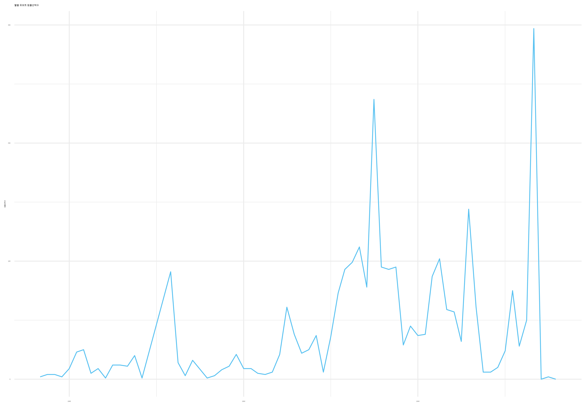
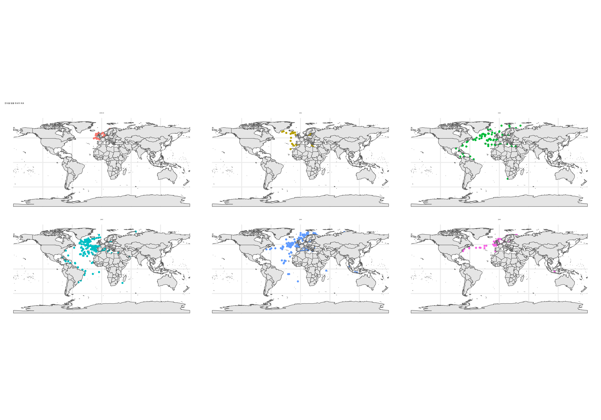
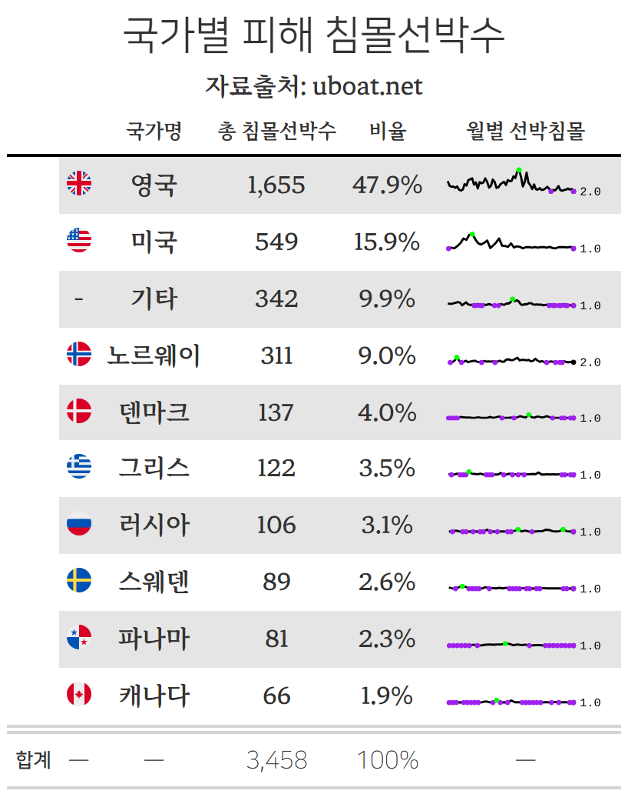
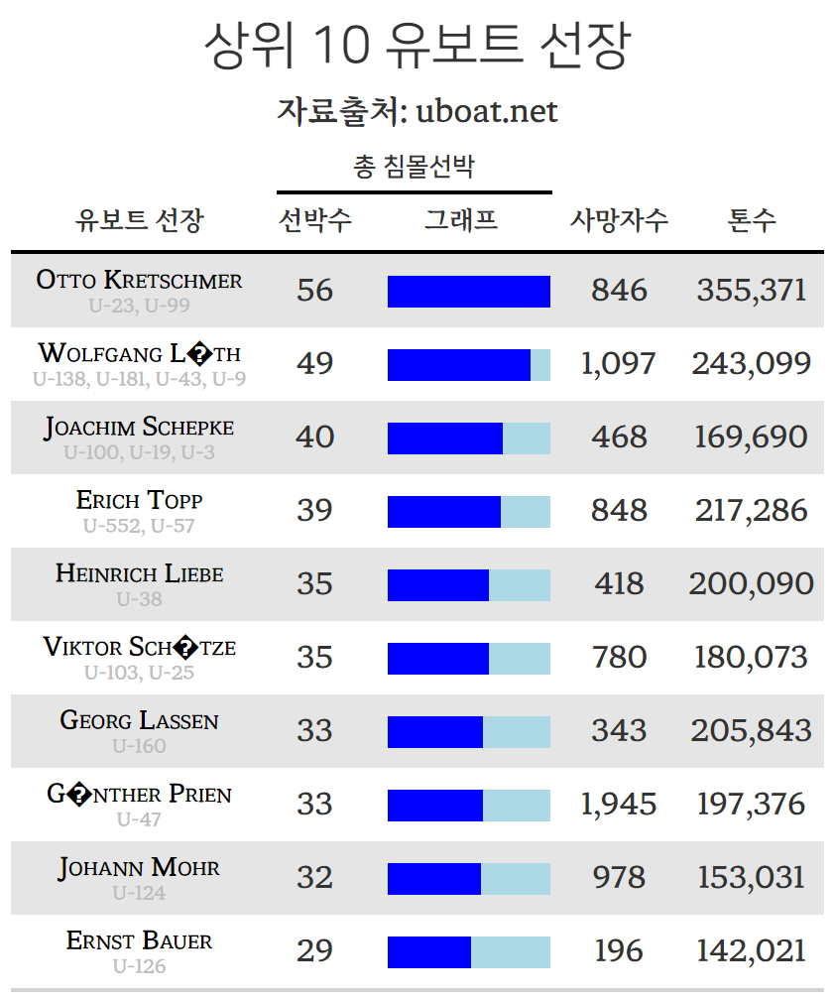
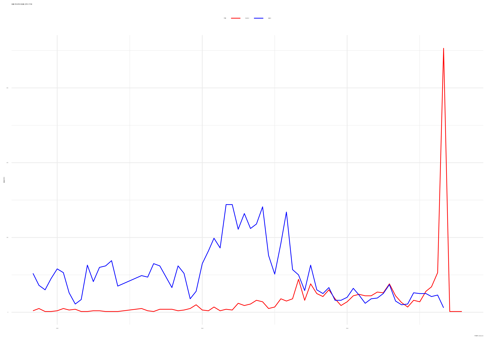

download.file(url = "https://raw.githubusercontent.com/kadenhendron/uboat-data/master/data/uboat-data.csv",
destfile = "data/uboat-data.csv", model = "w")9 유보드
(Hendron 2016)
uboat.net에서 제2차 세계대전 모든 독일 U보트, 지휘관, 공격한 연합군 함선을 포함한 작전, 기술 정보 등이 정리되어 있다. Kaden Hendron은 독일 유보드 데이터를 kadenhendron/uboat-data 저장소에 포트폴리오와 함께 정리해뒀다.
9.1 유보트 데이터
총 1,153대 유보트가 활동했으며 전쟁이 끝난 후에 유보트 운명을 표로 정리하면 다음과 같다.
library(tidyverse)
library(gt)
library(gtExtras)
uboat_raw <- read_csv("data/uboat-data.csv")
fate_type_eng <- c("Sunk", "Scuttled", "Surrendered", "Decommissioned", "Missing",
"Given", "Damaged", "Captured", "Grounded", "Destroyed")
fate_type_kor <- c("침몰", "자침", "항복", "해체", "실종", "기증", "손상", "포획", "좌초", "파괴")
fate_translation <- tibble(fate_type = fate_type_eng,
fate_type_kor = fate_type_kor)
uboat_raw |>
count(fate_type, sort = TRUE, name = "대수") |>
mutate(fate_kor = c("침몰", "자침", "항복", "해체", "실종", "기증", "손상", "포획", "좌초", "파괴")) |>
mutate(비율 = 대수 / sum(대수)) |>
relocate(fate_kor, .after = fate_type) |>
gt() |>
gt_theme_hangul() |>
cols_label(
fate_type = md("**fate type**"),
fate_kor = md("**유보트 운명**"),
) |>
grand_summary_rows(
columns = 대수,
fns = list(label = "합계", id='totals', fn = "sum"),
fmt = ~ fmt_integer(.),
side = "bottom"
) |>
grand_summary_rows(
columns = 비율,
fns = list(label = "합계", fn = "sum"),
fmt = ~ fmt_percent(., decimals = 0),
side = "bottom"
) |>
fmt_percent(columns = 비율, decimals = 1) |>
cols_align("center") |>
tab_header(
title = "유보트 유형별 운명",
subtitle = "자료출처: uboat.net"
)| 유보트 유형별 운명 | ||||
| 자료출처: uboat.net | ||||
| fate type | 유보트 운명 | 대수 | 비율 | |
|---|---|---|---|---|
| Sunk | 침몰 | 640 | 55.5% | |
| Scuttled | 자침 | 218 | 18.9% | |
| Surrendered | 항복 | 154 | 13.4% | |
| Decommissioned | 해체 | 55 | 4.8% | |
| Missing | 실종 | 46 | 4.0% | |
| Given | 기증 | 16 | 1.4% | |
| Damaged | 손상 | 12 | 1.0% | |
| Captured | 포획 | 5 | 0.4% | |
| Grounded | 좌초 | 4 | 0.3% | |
| Destroyed | 파괴 | 3 | 0.3% | |
| 합계 | — | — | 1,153 | 100% |
9.1.1 유보트 성과
유보트가 침몰시킨 선박수(ships_sunk) 정보가 담겨있어 이를 바탕으로 활동성과를 분석해보자.
uboat_tbl <- uboat_raw |>
# filter( fate_type == "Sunk") |>
mutate(fate_date = lubridate::mdy(fate))
uboat_tbl |>
group_by(fate_type) |>
summarise(침몰선박수 = sum(ships_sunk),
유보트수 = n()) |>
mutate(비율 = 침몰선박수 / sum(침몰선박수)) |>
arrange(desc(침몰선박수)) |>
left_join(fate_translation) |>
relocate(fate_type_kor, .after = fate_type) |>
relocate(유보트수, .after = fate_type_kor) |>
gt::gt() |>
gt_theme_hangul() |>
cols_align("center") |>
gt::tab_header(
title = "유보트 운명유형별 침몰선박수",
subtitle = "자료출처: uboat.net"
) |>
cols_label(
fate_type = md("**fate type**"),
fate_type_kor = md("**유보트 운명**"),
) |>
grand_summary_rows(
columns = 침몰선박수,
fns = list(label = "합계", id='totals', fn = "sum"),
fmt = ~ fmt_integer(.),
side = "bottom"
) |>
grand_summary_rows(
columns = 비율,
fns = list(label = "합계", fn = "sum"),
fmt = ~ fmt_percent(., decimals = 0),
side = "bottom"
) |>
fmt_percent(columns = 비율, decimals = 1) |>
fmt_integer(침몰선박수) |>
tab_spanner(label = "침몰선박", columns = c(침몰선박수, 비율))| 유보트 운명유형별 침몰선박수 | |||||
| 자료출처: uboat.net | |||||
| fate type | 유보트 운명 | 유보트수 | 침몰선박 | ||
|---|---|---|---|---|---|
| 침몰선박수 | 비율 | ||||
| Sunk | 침몰 | 640 | 1,809 | 65.8% | |
| Decommissioned | 해체 | 55 | 373 | 13.6% | |
| Scuttled | 자침 | 218 | 265 | 9.6% | |
| Surrendered | 항복 | 154 | 131 | 4.8% | |
| Missing | 실종 | 46 | 101 | 3.7% | |
| Given | 기증 | 16 | 41 | 1.5% | |
| Damaged | 손상 | 12 | 16 | 0.6% | |
| Captured | 포획 | 5 | 12 | 0.4% | |
| Destroyed | 파괴 | 3 | 2 | 0.1% | |
| Grounded | 좌초 | 4 | 1 | 0.0% | |
| 합계 | — | — | — | 2,751 | 100% |
# extrafont::font_import(pattern = "NanumSquare", prompt = FALSE)
# extrafont::loadfonts()
uboat_trends_gg <- uboat_tbl |>
mutate(fate_yearmon = floor_date(fate_date, "month")) |>
group_by(fate_yearmon) |>
summarise(침몰선박수 = sum(ships_sunk)) |>
arrange(desc(침몰선박수)) |>
ggplot(aes(x = fate_yearmon, y = 침몰선박수)) +
geom_line() +
theme_korean() +
labs(x ="",
title = "월별 유보트 침몰선박수")
uboat_trends_gg
ragg::agg_jpeg("images/uboat_trends_gg.jpg",
width = 10, height = 7, units = "in", res = 600)
uboat_trends_gg
dev.off()
library(giscoR)
library(sf)
world <- gisco_get_countries()
sunk_sf <- uboat_tbl |>
filter(fate_type == "Sunk") |>
mutate(sunk_year = year(fate_date)) |>
select(name, fat_lon, fate_lat, sunk_year) |>
mutate(across(fat_lon:fate_lat, as.numeric)) |>
mutate(sunk_year = as.factor(sunk_year)) |>
drop_na() |>
st_as_sf(coords = c("fat_lon", "fate_lat"), crs = sf::st_crs(world))
sunk_sf_gg <- sunk_sf |>
mutate(sunk_year = case_when(sunk_year %in% c(1939, 1940) ~ "1939-40",
TRUE ~ sunk_year)) |>
ggplot() +
geom_sf(size = 0.5, aes(color = sunk_year)) +
geom_sf(data = world) +
facet_wrap( ~ sunk_year ) +
theme_minimal() +
theme(legend.position = "none") +
labs(title = "연도별 침몰 유보트 좌표")
sunk_sf_gg
ragg::agg_jpeg("images/sunk_sf_gg.jpg",
width = 10, height = 7, units = "in", res = 600)
sunk_sf_gg
dev.off()
9.2 목표선박 데이터
GitHub 저장소에 침몰선박에 대한 정보도 확인해보자.
download.file(url = "https://raw.githubusercontent.com/kadenhendron/uboat-data/master/data/uboat-target-data.csv",
destfile = "data/uboat-target-data.csv", model = "w")국적별 총 침몰선박수를 표로 작성한다.
library(tidyverse)
library(gt)
library(gtExtras)
library(countrycode)
target_raw <- read_csv("data/uboat-target-data.csv")
target_tbl <- target_raw |>
mutate(attack_date = lubridate::mdy(attack_date)) |>
mutate(yearmon = floor_date(attack_date, "month"))
ships_nationality <- target_tbl |>
mutate(nationality = fct_lump(nationality, n = 9, other_level = "기타국가")) |>
group_by(nationality) |>
summarise(선박수 = n()) |>
arrange(desc(선박수))
top10_iso <- tribble(~"nationality", ~"iso3c", ~"country_name", ~"country_name_kr",
"British", "GBR", "United Kingdom", "영국",
"American", "USA", "United States", "미국",
"기타국가", "", "ETC", "기타",
"Norwegian", "NOR", "Norway", "노르웨이",
"Dutch", "NLD", "Denmark", "덴마크", # 주의: Dutch는 네덜란드 사람을 나타내며, Denmark는 덴마크를 의미합니다.
"Greek", "GRC", "Greece", "그리스",
"Soviet", "SUN", "Russia", "러시아", # 주의: Soviet는 소비에트 연방을 나타냅니다. 현대의 러시아와는 다름니다.
"Swedish", "SWE", "Sweden", "스웨덴",
"Panamanian", "PAN", "Panama", "파나마",
"Canadian", "CAN", "Canada", "캐나다")
target_uboat_gt <- target_tbl |>
mutate(nationality = fct_lump(nationality, n = 9, other_level = "기타국가")) |>
group_by(nationality, yearmon) |>
summarise(선박수 = n()) |>
group_by(nationality) |>
summarise(ships_data = list(선박수)) |>
left_join(ships_nationality) |>
arrange(desc(선박수)) |>
left_join(top10_iso) |>
mutate(iso_2 = countrycode(country_name, origin = "country.name", "iso2c")) |>
relocate(iso_2, .before = nationality) |>
select(iso_2, 국가명 = country_name_kr, 선박수, ships_data) |>
mutate(비율 = 선박수 / sum(선박수)) |>
relocate(비율, .after = 선박수) |>
gt() |>
gtExtras::gt_plt_sparkline(ships_data) |>
fmt_flag(columns = iso_2) |>
cols_label(
iso_2 = "",
선박수 = "총 침몰선박수",
ships_data = "월별 선박침몰"
) |>
gt_theme_hangul() |>
gt::tab_header(
title = "국가별 피해 침몰선박수",
subtitle = "자료출처: uboat.net"
) |>
grand_summary_rows(
columns = 선박수,
fns = list(label = "합계", id='totals', fn = "sum"),
fmt = ~ fmt_integer(.),
side = "bottom"
) |>
grand_summary_rows(
columns = 비율,
fns = list(label = "합계", fn = "sum"),
fmt = ~ fmt_percent(., decimals = 0),
side = "bottom"
) |>
fmt_percent(columns = 비율, decimals = 1) |>
fmt_integer(columns = 선박수) |>
cols_align("center") |>
gt::fmt_missing(missing_text = "-")
gtsave(target_uboat_gt, "images/target_uboat_gt.png")
9.3 유보트 사령관
commander_uboat <- target_tbl |>
count(commander, name) |>
group_by(commander) |>
summarise(잠수함 = str_c(name, collapse = ",")) |>
mutate(잠수함 = str_split(잠수함, pattern = ",")) |>
unnest(잠수함) |>
group_by(commander) |>
summarise(잠수함 = str_c(잠수함, collapse = ", "))
target_commander_gt <- target_tbl |>
group_by(commander) |>
summarise(선박수 = n(),
사망자수 = sum(dead, na.rm = TRUE),
톤수 = sum(tonnage, na.rm = TRUE)) |>
arrange(desc(선박수)) |>
mutate(선박수_그래프 = 선박수) |>
left_join(commander_uboat) |>
slice_max(order_by = 선박수, n = 10) |>
# 시각화
gt::gt() |>
cols_label(
commander = "유보트 선장",
선박수 = "선박수",
잠수함 = "탑승 잠수함",
선박수_그래프 = "그래프"
) |>
gt_theme_hangul() |>
gt::tab_header(
title = "상위 10 유보트 선장",
subtitle = "자료출처: uboat.net"
) |>
gtExtras::gt_merge_stack(col1 = commander, col2 = 잠수함) |>
cols_width(
commander ~ px(130),
선박수_그래프 ~ px(100)
) |>
fmt_integer(columns = is.numeric) |>
gt_plt_bar_pct(column = 선박수_그래프, scaled = FALSE, fill = "blue", background = "lightblue") |>
gt::tab_spanner(label = "총 침몰선박", columns = c(선박수, 선박수_그래프)) |>
cols_align("center")
gtsave(target_commander_gt, "images/target_commander_gt.png")
9.4 유보트와 선박
침몰된 선박과 유보트 손실을 월별 시각화를 통해서 1943년을 기점으로 유보트에 대한 연합국의 대응이 효과를 발휘하여 선박손실을 급격히 줄어든 반면 유보트 손실이 급격히 올라간 것을 확인할 수 있다.
uboat_yearmon <- uboat_tbl |>
mutate(년월 = floor_date(fate_date, "month")) |>
group_by(년월) |>
summarise(유보트수 = n())
target_yearmon <- target_tbl |>
mutate(년월 = floor_date(attack_date, "month")) |>
group_by(년월) |>
summarise(침몰수 = n())
uboat_yearmon_gg <- uboat_yearmon |>
left_join(target_yearmon) |>
pivot_longer(cols = 유보트수:침몰수, names_to = "구분", values_to = "선박수") |>
ggplot(aes(x = 년월, y = 선박수, color = 구분)) +
geom_line() +
labs(title = "침몰 유보트와 침몰 선박수 추세",
x = "",
y = "침몰선박수",
caption = "자료출처: uboats.net") +
theme_minimal() +
scale_color_manual(values = c("red", "blue")) +
theme(legend.position = "top")
ragg::agg_jpeg("images/uboat_yearmon_gg.jpg",
width = 10, height = 7, units = "in", res = 600)
uboat_yearmon_gg
dev.off()